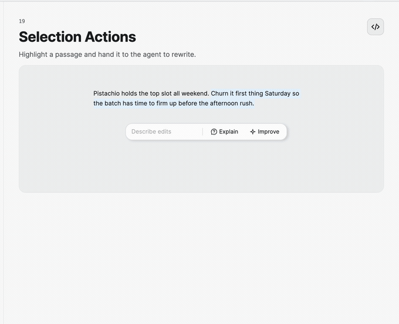
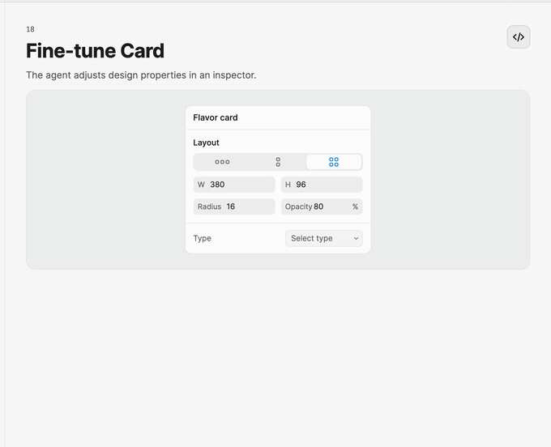

Fine-tuning Controls
Use SelectionToolbar for text-oriented AI actions and FineTuneCard with PropertyFieldChip for compact visual or structured adjustments.
Act on a selection
<nova:SelectionToolbar ActionsSource="{Binding SelectionActions}"
Text="{Binding Instruction}"
ActionCommand="{Binding RunSelectionActionCommand}"
SubmitCommand="{Binding SubmitInstructionCommand}" />
SelectionAction entries describe actions such as rewrite, summarize, or explain. ActionInvoked reports the chosen action. The optional text field uses the familiar CanSend and ClearOnSubmit submission contract.

Adjust properties
<nova:FineTuneCard Title="Tune selected element"
Layout="Row"
ElementWidth="{Binding ElementWidth}"
ElementHeight="{Binding ElementHeight}"
ElementRadius="{Binding CornerRadius}"
ElementOpacity="{Binding Opacity}" />
FineTuneCard provides width, height, radius, and opacity values plus an IsAdjusting state. PropertyFieldChip is the lower-level numeric primitive when the host needs a custom set of properties:
<nova:PropertyFieldChip Label="Temperature"
Minimum="0"
Maximum="2"
Value="{Binding Temperature}"
Suffix="×" />
